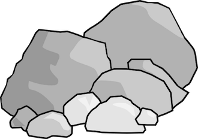
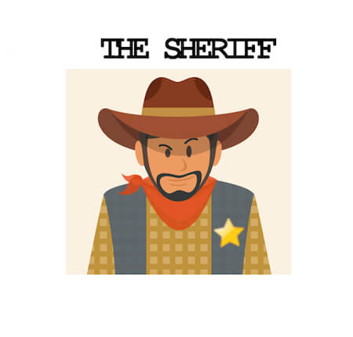

<!doctype html>
<html>
<head>
	<title>Wild West Study</title>
	<script src="https://ajax.googleapis.com/ajax/libs/jquery/1.11.1/jquery.min.js"></script>
	<script src="jspsych-5.0.3/jspsych.js"></script>
	<script src="jspsych-5.0.3/plugins/jspsych-text.js"></script>
	<script src="jspsych-5.0.3/plugins/jspsych-xab.js"></script>
	<script src="jspsych-5.0.3/plugins/jspsych-two-initial-choice.js"></script>
	<script src="jspsych-5.0.3/plugins/jspsych-feedback-benev-1.js"></script>
	<script src="jspsych-5.0.3/plugins/jspsych-feedback-benev-2.js"></script>
	<script src="jspsych-5.0.3/plugins/jspsych-feedback-acond-1.js"></script>
	<script src="jspsych-5.0.3/plugins/jspsych-feedback-acond-2.js"></script>
	<script src="jspsych-5.0.3/plugins/jspsych-feedback-rand-1.js"></script>
	<script src="jspsych-5.0.3/plugins/jspsych-feedback-rand-2.js"></script>
	<script src="jspsych-5.0.3/plugins/jspsych-html.js"></script>
	<script src="jspsych-5.0.3/plugins/jspsych-survey-text.js"></script>
	<script src="jspsych-5.0.3/plugins/jspsych-button-response-ehp.js"></script>
	<script src="jspsych-5.0.3/plugins/jspsych-multi-stim-multi-response.js"></script>
	<script src="jspsych-5.0.3/plugins/jspsych-survey-multi-choice.js"></script>
	<script src="jspsych-5.0.3/plugins/jspsych-survey-text.js"></script>
	<script src="jspsych-5.0.3/plugins/jspsych-instructions.js"></script>
	<script src="jspsych-5.0.3/additional-functions.js"></script>
	<script src="https://ajax.googleapis.com/ajax/libs/jqueryui/1.10.3/jquery-ui.min.js"></script>
<link href="https://ajax.googleapis.com/ajax/libs/jqueryui/1.10.3/themes/black-tie/jquery-ui.min.css" rel="stylesheet" type="text/css"></link>
		<script src="jspsych-5.0.3/plugins/jspsych-call-function.js"></script>
	<link href="jspsych-5.0.3/css/jspsych.css" rel="stylesheet" type="text/css"></link>
	<head>
	<style>
	.jspsych-button-response-button { height: 60px; width: 300px; font-size: 12px }

	</style>
	</head>

</head>
<body>
</body>
<script>

// Behavioral Task for Exp 1 from Dorfman, et al., 2018, Psych Science //
// Hayley Dorfman //


var timeline = [];

var all_images = ["img/teal_mine.png","img/teal2_mine.png","img/green2_mine.png",
"img/purp2_mine.png","img/lavender_mine.png",
"img/orange3_mine.png",
"img/pink1_mine.png","img/pink2_mine.png","img/red_mine.png",
"img/yellow_mine.png","img/gray_mine.png",
"img/blue_mine.png","img/cobalt_mine.png",
"img/gold.png", "img/rock.png",
"img/bandit.jpg","img/sheriff.jpg","img/tycoon.jpg","img/tycoon_bg.jpg","img/bandit_bg.jpg","img/sheriff_bg.jpg",
"img/tycoon_rock.png","img/bandit_gold.png",
"img/dig_example.png","img/tycoon_outcome_example.png","img/bandit_outcome_example.png","img/sheriff_outcome_example.png",
"img/condition_example.png","img/instructions_patternonly_bg.jpg",
 "img/outcome_blank.png", "img/tycoon_small.jpg",
"img/money.jpg"]

/*define weights for latent agent intervention*/
var latent = [.30, .70]; //probabilities for latent agent intervention
var weight_decision = [1,0]; //values to return; 1 is latent agent intervened, 0 is they didn't
var intermediate_output = [];
var final_weight_output = [];


	/*preload images */
	jsPsych.pluginAPI.preloadImages(all_images, function(){ startExperiment(); });


/*consent*/

var check_consent = function(elem) {
	if ($('#consent_checkbox').is(':checked')) {
		return true;
	}
	else {
		alert("If you wish to participate, you must check the box.");
		return false;
	}
	return false;
};
var consent_block = {
	type:'html',
	url: "consent2.html",
	cont_btn: "start",
	check_fn: check_consent
};

	timeline.push(consent_block)

		/* define instructions block */
		var instructions_block = {
		type: 'instructions',
		pages: [
				"<p class='center-content'> Welcome to the experiment!</p>"+
				"<p class='center-content'> In this experiment, imagine you're a gold miner in the Wild West.</p>",
				"<p class='center-content'> At the start of each new round, you will mine at a different location. Each new location will have two mines with different probabilities of having gold.</p>"+
				"<p class='center-content'></img></img>",
				"<p class='center-content'> For example, the orange mine has a different chance of giving you gold than the teal mine.</p>"+
				"<p class='center-content'> In each new location, you need to learn which mine is best.</p>",
				"<p class='center-content'> To choose a mine, click the button on the screen below the mine you want to dig in."+
				"<p class='center-content'></img>",
				"<p class='center-content'> After you choose a mine, you will see whether you found gold or rocks.</p>"+
				"<p class='center-content'></img></img>",
				"<p class='center-content'> Your goal is to get as much gold as possible.</p>"+
				"<p class='center-content'> You will <b>get</b> a small amount of <b>real bonus money</b> each time you mine <b>GOLD</b>.</p>"+
				"<p class='center-content'> You will <b>lose</b> a small amount of <b>real bonus money</b> each time you mine <b>ROCKS</b>.</p>"+
				"<p class='center-content'> We will add up your winnings and show them to you at the end of the game.</p>"+
				"<p class='center-content'> If you end up with negative winnings, you will never owe us any money.</p>"+
				"<p class='center-content'></img>",
				"<p class='center-content'> It turns out that different mining locations are under the influence of 3 different people from the Wild West settlement.</p>"+
				"<p class='center-content'> These people can occassionally change the outcomes you receive at a mine, regardless of what you would normally receive from that particular mine.</p>",
				"<p class='center-content'> One mining location is frequented by a charitable gold tycoon.</p>"+
				"<p class='center-content'> For a third of the time that you dig at the mines, the tycoon has left you bags of gold in both mines, so you will receive gold regardless of which color mine you choose.</p>"+
				"<p class='center-content'></img>",
				"<p class='center-content'> After you get your gold or rocks, you should indicate whether you think that the outcome occurred as a result of the tycoon.</p>"+
				"<p class='center-content'> Click on 'No' or 'Yes' to indicate whether you think the tycoon was responsible for the outcome you received.</p>"+
				"<p class='center-content'></img>",
				"<p class='center-content'> Another mining location is frequented by a dastardly bandit.</p>"+
				"<p class='center-content'> For a third of the time that you dig at the mines, the bandit has stolen all of the gold at both mines, so you will receive rocks regardless of which color mine you choose.</p>"+
				"<p class='center-content'></img>",
				"<p class='center-content'> After you get your gold or rocks, you should indicate whether you think that the outcome occurred as a result of the bandit.</p>"+
				"<p class='center-content'> Click on 'No' or 'Yes' to indicate whether you think the bandit was responsible for the outcome you received.</p>"+
				"<p class='center-content'></img>",
				"<p class='center-content'> A third mining location is frequented by a sheriff.</p>"+
				"<p class='center-content'> A third of the times you go to dig at the mines, the sheriff will have tried to redistribute the gold and rocks in the mines. This means that during these digs, you will randomly receive either rocks or gold, regardless of which color mine you choose.</p>"+
				"<p class='center-content'></img>",
				"<p class='center-content'> After you get your gold or rocks, you should indicate whether you think that the outcome occurred as a result of the sheriff.</p>"+
				"<p class='center-content'> Click on 'No' or 'Yes' to indicate whether you think the sheriff was responsible for the outcome you received.</p>"+
				"<p class='center-content'></img>",
				"<p class='center-content'> We will tell you which territory you are in (the tycoon, the bandit, or the sheriff) at the beginning of each round.</p>"+
				"<p class='center-content'> The upper right-hand corner of your screen will also remind you of the territory you are in as you play.</p>"+
				"<p class='center-content'></img>",
				"<p class='center-content'> Next you'll try some practice questions. Once you click 'Next' you CAN NOT come back to the instructions.</p>"+
				"<p class='center-content'> If you want to review the instructions, you should do so now. If you don't get the practice questions correct, you can't move on.</p>"


		],
		show_clickable_nav: true,
		screen_color: function(){
			document.documentElement.style.backgroundImage = "url('img/instructions_patternonly_bg.jpg')";
			document.documentElement.style.backgroundSize = "cover";
			document.documentElement.style.backgroundRepeat = "no-repeat";
		}
	};


	timeline.push(instructions_block)


	/*define prac1 question*/

					var prac1 = {
					type: "button-response-ehp",
					prompt: "<p class='center-content'> When you are in a <b>Bandit Territory</b>, a third of the time that you dig in a mine, you will receive ____ for certain.</p>",
					choices: ['Rocks', 'Gold'],
					timing_post_trial: 1000,
					stimulus: 'img/bandit.jpg',
					screen_color: function(){
						document.documentElement.style.background = "White";
					}

				};

					timeline.push(prac1)


/*define prac2 question*/

				var prac2 = {
				type: "button-response-ehp",
				prompt: "<p class='center-content'>What does it mean when you see a mine with a different color?</p>",
				choices: ["It has a different probability<br> of giving me gold", "It has the same probability of giving me gold<br> as the other mines", "It has the same probability of gold as<br> a different colored mine in the same<br> territory", "It doesn't mean anything"],
				timing_post_trial: 1000,
				stimulus: 'img/pink1_mine.png',

			};

				timeline.push(prac2)


			/* define instructions block */
			var instructions_block2 = {
			type: 'instructions',
			pages: [
					"<p class='center-content'> Good job! You're ready to start the experiment.</p>"+
					"<p class='center-content'> Follow the instructions on the screen carefully for each question.</p>",
					"<p class='center-content'> Please complete the full experiment and be careful to advance to the completion code screen at the end of the experiment so that your data will be saved.</p>"+
					"<p class='center-content'> If your data is not saved, we will not be able to accept your HIT.</p>",
					"<p class='center-content'> Please also note that we check your data for accuracy.</p>"+
					"<p class='center-content'> If you click buttons randomly, or have below average performance, we have the right to <b>exclude you from all future HITs by our group</b>.</p>"+
					"<p class='center-content'> We appreciate you taking the time to complete the task to the best of your ability.</p>"+
					"<p class='center-content'> The whole experiment will take about 30 minutes.</p>"+
					"<p class='center-content'> When you are ready to start the experiment, you can click 'Next.'</p>"
			],
			show_clickable_nav: true
		};

		timeline.push(instructions_block2)

//set number of trials for each block
var n_trials = 50; //number of total trials per block

var n_latent_trials = Math.round(n_trials*.30); //number of latent trials per block
var n_reg_trials = n_trials-n_latent_trials; //number of normal trials per block


function repeatSimple(element, times)
{
    var result = [];
    for(var i=0;i<times;i++)
      result.push(element);
    return result;
}


/*define image order*/
var all_mine_images = ["img/teal_mine.png","img/teal2_mine.png","img/green2_mine.png",
"img/purp2_mine.png","img/lavender_mine.png",
"img/orange3_mine.png",
"img/pink1_mine.png","img/pink2_mine.png","img/red_mine.png",
"img/yellow_mine.png","img/gray_mine.png",
"img/blue_mine.png","img/cobalt_mine.png"]

	// shuffle mine_images
var mine_image = jsPsych.randomization.shuffle(all_mine_images)


var outcome_blank = "img/outcome_blank.png";

//create trial arrays
var ones = repeatSimple(1,n_latent_trials);
var zeros = repeatSimple(0,n_reg_trials);
var trial_array = ones.concat(zeros)

var latent_b_array1 = jsPsych.randomization.shuffle(trial_array) //shuffle latent agent intervention trial order

var latent_a_array1 = jsPsych.randomization.shuffle(trial_array) //shuffle latent agent intervention trial order

var latent_r_array1 = jsPsych.randomization.shuffle(trial_array) //shuffle latent agent intervention trial order


//define constant weights
var weights_agent_b = [1, 0]; // probabilities for benevolent agent
var weights_agent_a = [0, 1]; // probabilities for adversarial agent
var weights_agent_r = [.5, .5]; // probabilities for neutral agent
var results = [1, 0]; // values to return


//begin benevolent block #1


var benevolent_block_1 = [];


      /*define weights for feedback*/
			var a_weight = Math.random() < 0.5 ? .70 : .30;
			var b_weight = 1-a_weight;

			var weights_free_left_b1 = [a_weight, b_weight]; // probabilities for free will

			var weights_free_right_b1 = [b_weight, a_weight]; // probabilities for free will


				/* define inter block benevolent */
				var inter_block_benev = {
					type: 'instructions',
					pages: ["<p class='center-content'>You are about to mine for gold in a new location.</p>"+
					"<p class='center-content'>This location is frequented by the <b>TYCOON</b>.</p>"+
					"<p class='center-content'>Remember, this means that you will find <b>GOLD</b> <b>a third of the time</b> you dig, regardless of whether or not you would have normally received gold from that mine on a particular dig.</p>"+
					"<p class='center-content'>Try to learn which mine is best.</p>"
					],
					show_clickable_nav: true,
					allow_backward: false,
					screen_color: function(){
						document.documentElement.style.backgroundImage = "url('img/tycoon_bg.jpg')";
						document.documentElement.style.backgroundSize = "1400px 800px";
						document.documentElement.style.backgroundRepeat = "no-repeat";
					}
				};

				 benevolent_block_1.push(inter_block_benev);

				 for (var i = 0; i < n_trials; i++){

									var initial_choice={
	 								type: 'two-initial-choice',
	 								block_id: 'benevolent',
	 								choices: ['Dig Here','Dig Here'],
	 								prompt: "<p class='center-content'><b>Choose a mine</b><BR>",
	 								stimuli: [mine_image[0],mine_image[1]],
									timing_post_trial: 0,
									agent_image: "img/tycoon_small.jpg",
									screen_color: function(){
										document.documentElement.style.background = "White";
									}

	 								};

							var trial_outcome={
								type: 'feedback-benev-1',
								block_id: 'benevolent',
								choices: ['No','Yes'],
								prompt: "<p class='center-content'><b>Do you think that this outcome occurred because the tycoon intervened?</b><BR>",
								stimuli: [mine_image[0],mine_image[1], outcome_blank],
								timing_post_trial: 500,
								agent_image: "img/tycoon_small.jpg",
								feedback_image: ["img/rock.png","img/gold.png"],

									timeline: [
										{latent_intervention: latent_b_array1[i]}
									],

								};


						benevolent_block_1.push(initial_choice);
						benevolent_block_1.push(trial_outcome);


				};


//begin adversarial block

	var adversarial_block_1 = [];

				/*define weights for feedback*/

				var e_weight = Math.random() < 0.5 ? .70 : .30;
				var f_weight = 1-e_weight;

				var weights_free_left_a1 = [e_weight, f_weight]; // probabilities for free will


				var weights_free_right_a1 = [f_weight, e_weight]; // probabilities for free will

//begin loop for adversarial condition


				/* define inter block adversarial */
				var inter_block_adv = {
					type: 'instructions',
					pages: ["<p class='center-content'>You are about to mine for gold in a new location.</p>"+
					"<p class='center-content'>This location is frequented by the <b>BANDIT</b>.</p>"+
					"<p class='center-content'>Remember, this means that you will find <b>ROCKS</b> <b>a third of the time</b> you dig, regardless of whether or not you would have normally received rocks from that mine on a particular dig.</p>"+
				"<p class='center-content'>Try to learn which mine is best.</p>"],
					show_clickable_nav: true,
					allow_backward: false,
					screen_color: function(){
					document.documentElement.style.backgroundImage = "url('img/bandit_bg.jpg')";
					document.documentElement.style.backgroundSize = "1400px 800px";
					document.documentElement.style.backgroundRepeat = "no-repeat";
					}
				};

				adversarial_block_1.push(inter_block_adv);


						for (var i = 0; i < n_trials; i++){

							var initial_choice={
							type: 'two-initial-choice',
							block_id: 'adversarial',
							choices: ['Dig Here','Dig Here'],
							prompt: "<p class='center-content'><b>Choose a mine</b><BR>",
							stimuli: [mine_image[4],mine_image[5]],
							timing_post_trial: 0,
							agent_image: "img/bandit_small.jpg",
							screen_color: function(){
								document.documentElement.style.background = "White";
							}

							};

							var trial_outcome={
							type: 'feedback-acond-1',
							block_id: 'adversarial',
							choices: ['No','Yes'],
							prompt: "<p class='center-content'><b>Do you think that this outcome occurred because the bandit intervened?</b><BR>",
							stimuli: [mine_image[4],mine_image[5], outcome_blank],
							timing_post_trial: 500,
							agent_image: "img/bandit_small.jpg",
							feedback_image: ["img/rock.png","img/gold.png"],
													timeline: [
														{latent_intervention: latent_a_array1[i]}
													],

												};

											adversarial_block_1.push(initial_choice);
											adversarial_block_1.push(trial_outcome);

								};


//begin random block condition

var random_block_1 = [];

			/*define weights for feedback*/
			var i_weight = Math.random() < 0.5 ? .70 : .30;
			var j_weight = 1-i_weight;

			var weights_free_left_r1 = [i_weight, j_weight]; // probabilities for free will


			var weights_free_right_r1 = [j_weight, i_weight]; // probabilities for free will


					//begin loop for random condition


									// /* define inter block random */
									var inter_block_rand = {
										type: 'instructions',
										pages: ["<p class='center-content'>You are about to mine for gold in a new location.</p>"+
										"<p class='center-content'>This location is frequented by the <b>SHERIFF</b>.</p>"+
										"<p class='center-content'>Remember, this means that you will randomly find <b>ROCKS or GOLD</b> <b>a third of the time</b> you dig, regardless of whether or not you would have normally received that outcome from that mine on a particular dig.</p>"+
									"<p class='center-content'>Try to learn which mine is best.</p>"],
										show_clickable_nav: true,
										allow_backward: false,
										screen_color: function(){
										document.documentElement.style.backgroundImage = "url('img/sheriff_bg.jpg')";
										document.documentElement.style.backgroundSize = "1400px 800px";
										document.documentElement.style.backgroundRepeat = "no-repeat";
										}
									};


				random_block_1.push(inter_block_rand);


							for (var i = 0; i < n_trials; i++){


								var initial_choice={
								type: 'two-initial-choice',
								block_id: 'random',
								choices: ['Dig Here','Dig Here'],
								prompt: "<p class='center-content'><b>Choose a mine</b><BR>",
								stimuli: [mine_image[8],mine_image[9]],
								timing_post_trial: 0,
								agent_image: "img/sheriff_small.jpg",
								screen_color: function(){
									document.documentElement.style.background = "White";
								}

								};

						var trial_outcome={
							type: 'feedback-rand-1',
							block_id: 'random',
							choices: ['No','Yes'],
							prompt: "<p class='center-content'><b>Do you think that this outcome occurred because the sheriff intervened?</b><BR>",
							stimuli: [mine_image[8],mine_image[9], outcome_blank],
							timing_post_trial: 500,
							agent_image: "img/sheriff_small.jpg",
							feedback_image: ["img/rock.png","img/gold.png"],
							timeline: [
								{latent_intervention: latent_r_array1[i]}
																],

															};

															random_block_1.push(initial_choice);
															random_block_1.push(trial_outcome);
												};


												/*randomize block order*/

														//var g_blocks = [benevolent_block_1, benevolent_block_2, adversarial_block_1, adversarial_block_2, random_block_1, random_block_2];
														var g_blocks = [benevolent_block_1, adversarial_block_1, random_block_1];

														var g_random_order = jsPsych.randomization.shuffle(g_blocks);


												//flatten the randomized block array
												  		function flatten(arr) {
																	return arr.reduce(function (flat, toFlatten) {
												    			return flat.concat(Array.isArray(toFlatten) ? flatten(toFlatten) : toFlatten);
												  			}, []);
																}

																	var merged = flatten(g_random_order);


var trial_num_bonus = [];
var ending = [];
var all_gamble_outcomes = 0;
var total_3 = 0;

/*define bonus payment*/


function getSubjectData() { //define function for bonus

	var trials1 = jsPsych.data.getTrialsOfType('feedback-benev-1');

	var trials3 = jsPsych.data.getTrialsOfType('feedback-acond-1');

	var trials5 = jsPsych.data.getTrialsOfType('feedback-rand-1');


//sum for each trial type

	var total_slider1 = 0;

	var total_slider3 = 0;

	var total_slider5 = 0;

	var total_negative1 = 0;
	var total_negative3 = 0;
	var total_negative5 = 0;

	for (var k = 0; k < trials1.length; k++) {

			// if you want to have rocks be negative bonus money, add this!
			if (trials1[k].gamble_feedback == 0){
				total_negative1 += -0.5;
			}

			if (trials3[k].gamble_feedback == 0){
				total_negative3 += -0.5;
			}

			if (trials5[k].gamble_feedback == 0){
				total_negative5 += -0.5;
			}


			total_slider1 += trials1[k].gamble_feedback;

			total_slider3 += trials3[k].gamble_feedback;

			total_slider5 += trials5[k].gamble_feedback;


			}

			var total_1 = total_slider1+total_slider3+total_slider5+total_negative1+total_negative3+total_negative5;


			var total_2 = Math.abs(total_1/50);
			
	return {

	//	bonus: all_gamble_outcomes[Math.floor(Math.random() * all_gamble_outcomes.length)], //if you want to pick a random trial for bonus
			total_score: total_2

	}
}


var worker_id_input = {
	type: "survey-text",
	questions: ["Please input your Mturk Worker ID so that we can pay you the appropriate bonus. Your ID will not be shared with anyone outside of our research team."]

}

var attention_check = {
	type: "survey-text",
	questions: ["Please type the territory you were in last (tycoon, bandit, or sheriff)."],
	screen_color: function(){
		document.documentElement.style.background = "White";
	}

}

var comments_block = {
	type: "survey-text",
	questions: ["We're always trying to improve. Please let us know if you have any comments.</BR> Click 'Submit Answer' to continue to your bonus."],
}

var bonus_block = {
  type: "text",
  text: function() {
    var subject_data = getSubjectData();
		jsPsych.data.addDataToLastTrial({"total_score": subject_data.total_score});
			return "<p class='center-content'> You won a bonus of <strong>" +'$'+ +subject_data.total_score+ ".</strong></p>"+
			"<p class='center-content'> IMPORTANT: <b>Press any key</b> to complete the experiment and receive a confimation code. Thank you for participating!</p>";
		}

  };

ending.push(comments_block);
ending.push(attention_check);
ending.push(worker_id_input);
ending.push(bonus_block);


//for turkprime
var urlVar = jsPsych.data.urlVariables();
var turkInfo = jsPsych.turk.turkInfo();
//console.log('turkID is '+ turkInfo)
var keyLink = "[put your own survey link here]" + turkInfo.workerId + "&assignmentId=" + turkInfo.assignmentId + "&hitId=" + turkInfo.hitId + "&a=" + urlVar.a + "&b=" + urlVar.b + "&c=" + urlVar.c


	// generate random subject id
		var subject_id =  Math.floor(Math.random()*100000)

		jsPsych.data.addProperties({
  subject: subject_id
});

	// add chance of latent agent intervention to data
jsPsych.data.addProperties({
latent_prob: latent[0]
});

// add mturk info to data
jsPsych.data.addProperties({
assignmentID: turkInfo.assignmentId
});

jsPsych.data.addProperties({
mturkID: turkInfo.workerId
});

jsPsych.data.addProperties({
hitID: turkInfo.hitId
});


				// function to save data
				function saveData(filename, filedata){
					$.ajax({
						type:'post',
						cache: false,
						url: 'save_data.php', // this is the path to the above PHP script
						data: {filename: filename, filedata: filedata},
						complete: function() { //added
							window.location.href = keyLink;
						}

					});
				}


				/* grab data before the end of the experiment */

				var save_data = {
					type: 'call-function',
					func: function()
					{
						saveData(subject_id + '_output.csv', jsPsych.data.dataAsCSV())
					}
					,timing_post_trial: 0
				};


				ending.push(save_data);


				var test = [].concat.apply([timeline], [merged]);


				var test2 = [].concat.apply([test], [ending]);


				var experiment = flatten(test2);


				/* start the experiment */
				function startExperiment(){
					jsPsych.init({
					timeline: experiment

				});
			}


	</script>
	</html>
